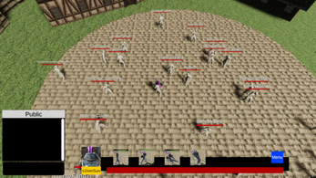

Goodbye Sunny
Unity 3DC#InkJSONGitHub
Game Description
You buy a used/hacked account on sale for an MMO that is about to be shut down, hoping to catch the best of the end-game content. As you're about to begin, however, someone from the account's friend list invites you to a party and says hello. They mistake you for the original owner of the account. You can play along or shrug them off, but they'll try their best to reconnect with their old friend.Controls
- Left click to move.
- Left click an enemy to attack it.
- Left click to select portals.
- Esc to pause.

Overview
This is a game submission for Dying MMO Jam; a two and a half week game jam. For this Unity 3D project, I programmed the game UI and dialogue system, following the object oriented programming paradigm, as well as incorporating art assets. We also used Ink to write narrative scripts that would be exported as JSON files for implementing dialogue text. To see more images and full credits list, please visit our itch.io page.
